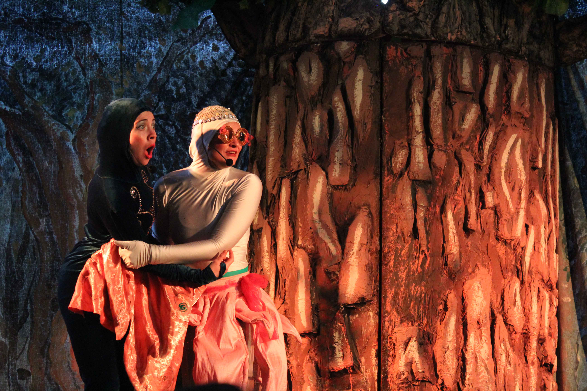

<!DOCTYPE html>
<html lang="en"></html>
<head>
  <meta charset="UTF-8"/>
  <title>Escuela Libertad Puerto Montt</title>
  <link rel="stylesheet" href="../css/noticia.css"/>
</head>
<body>
  <div class="banner1"></div>
  <div class="banner2"></div>
  <section id="nav_cero">
    <div class="box_one">
      <h1>Escuela <span>Libertad</span></h1>
    </div>
    <div class="box_two">
      <nav>
        <ul>
          <li><a href="/index.html">Home</a></li>
        </ul>
        <ul>
          <li><a href="/historia.html"><span>Historia</span></a></li>
        </ul>
        <ul>
          <li><a href="/integracion.html">Integracion</a></li>
        </ul>
        <ul>
          <li><a href="/planespropios.html"><span>Talleres</span></a></li>
        </ul>
        <ul>
          <li><a href="/ProyectoEducativo.html">PEI</a></li>
        </ul>
      </nav>
    </div>
  </section>
  <div class="wrap">
    <h3>18 de Agosto de 2017</h3>
    <div class="cabenoticia">
      <h1>Teatro en Escuela Libertad</h1>
    </div>
    <div class="noticiacero">
      <h2>"Niño Caracol"</h2>
    </div>
    <div class="cab__noticia">
      <h1>Nos visitaron desde Santiago, la compañia de Teatro "Puerto de Sueños"</h1>
    </div>
    <div class="noticiauno">
      <div class="not__parr"> 
        <p>Escuela Libertad en conjunto a la Ilustre Municipalidad de Puerto Montt, tuvo el agrado de recibir a la Compañía de Teatro “Puerto de Sueño”. Nuestros Estudiantes pudieron disfrutar de “El niño Caracol”.<br>“Puertos de Sueños” nació hace ya 13 años en la ciudad de Santiago, y fue fundada por Nelson Goycolea, Roxana Goycolea, el dramaturgo es don Nelson Goycolea (padre).  Han podido recorrer desde Arica a Coihaique, posibilitando el acceso a obras teatrales a  sectores cordilleranos como Lonquimay o Cunco, ‘teniendo una gran recepción, sobre todo en lugares donde nunca se ha hecho teatro’.</p>
        <p>En esta ocasión visitaron a Escuela Libertad,  gracias a fondos gestionados por La Dirección del Colegio a través del DAEM de Puerto Montt.</p>
        <p>Don Omar Reyes, encargado de la presentación, nos comenta que se encuentran preparando la siguiente obra “El principito”, y que se comenzara a presentar desde Octubre.</p>
        <p>
          Si deseas conocer más acerca de esta compañía de teatro puedes visitar http://www.puertodesueno.cl o Redes Sociales bajo el mismo nombre.
          
        </p>
      </div><div class="fb-post" data-href="https://www.facebook.com/media/set/?set=a.255053064986136.1073741865.100014443334294&amp;type=1&amp;l=31644c11f9" data-width="500" data-show-text="true"><blockquote cite="https://www.facebook.com/media/set/?set=a.255053064986136.1073741865.100014443334294&amp;type=3" class="fb-xfbml-parse-ignore">Posted by <a href="https://www.facebook.com/esc.libertad.39">Esc Libertad</a> on&nbsp;<a href="https://www.facebook.com/media/set/?set=a.255053064986136.1073741865.100014443334294&amp;type=3">viernes, 18 de agosto de 2017</a></blockquote></div>
    </div>
    <div class="box__comentario">
      <div class="box__comentario"></div><!-- Script de Comentario-->
<script>(function(d, s, id) {var js, fjs = d.getElementsByTagName(s)[0];if (d.getElementById(id)) return;js = d.createElement(s); js.id = id;js.src = "//connect.facebook.net/es_ES/sdk.js#xfbml=1&version=v2.9";fjs.parentNode.insertBefore(js, fjs);}(document, 'script', 'facebook-jssdk'));</script><div class="fb-comments"data-href="http://www.elibertad.cl/noticias/noticia4.html" data-width="100%" data-numposts="5"></div><div id="fb-root"></div>
    </div>
    <footer>
      <div class="direccion"><span class="icon-compass"></span>
        <h1>Dirección: Iquique 230, Poblacion Libertad - Puerto Montt</h1>
      </div>
      <div class="telefono"><span class="icon-phone"></span>
        <h1>Telefono : 65 2 484525</h1>
      </div>
      <div class="mail"><span class="icon-inbox"></span>
        <h1>libertad@escuelas.dempuertomontt.cl</h1>
      </div>
      <div class="face"><a href="https://www.facebook.com/esc.libertad.39"><span class="icon-facebook-official"></span></a></div><span class="icon-youtube-square"></span>
    </footer>
  </div>
</body>